Volcanic world: established atmospheric lighting retained

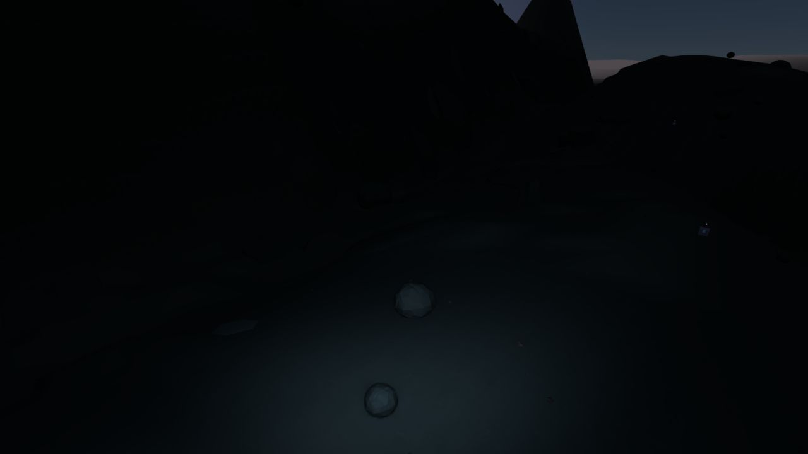
Actual 1280×720 browser captures. Baseline ca81ca72. Full findings and limitations · Extraction milestone playback. Screenshot locations described by the request were unavailable; these are saved repository camera fixtures.
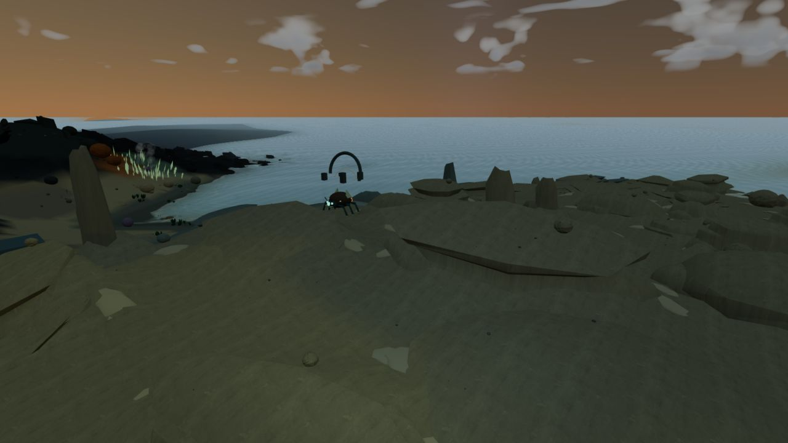
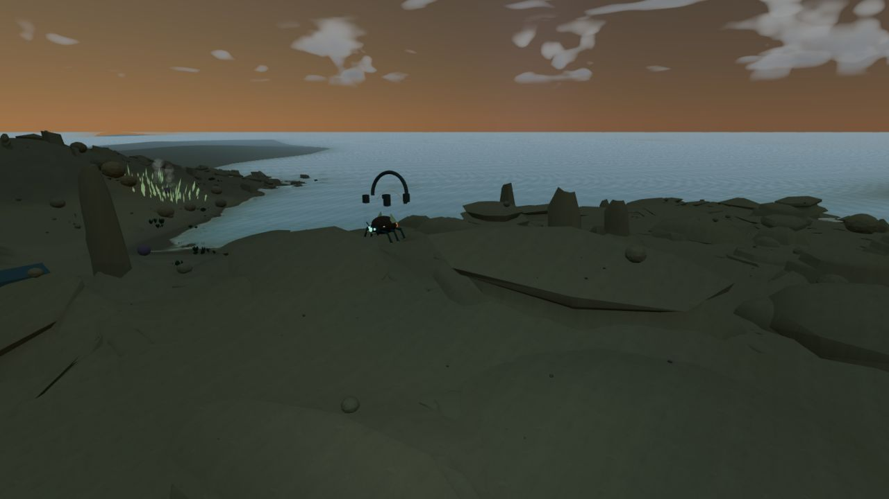
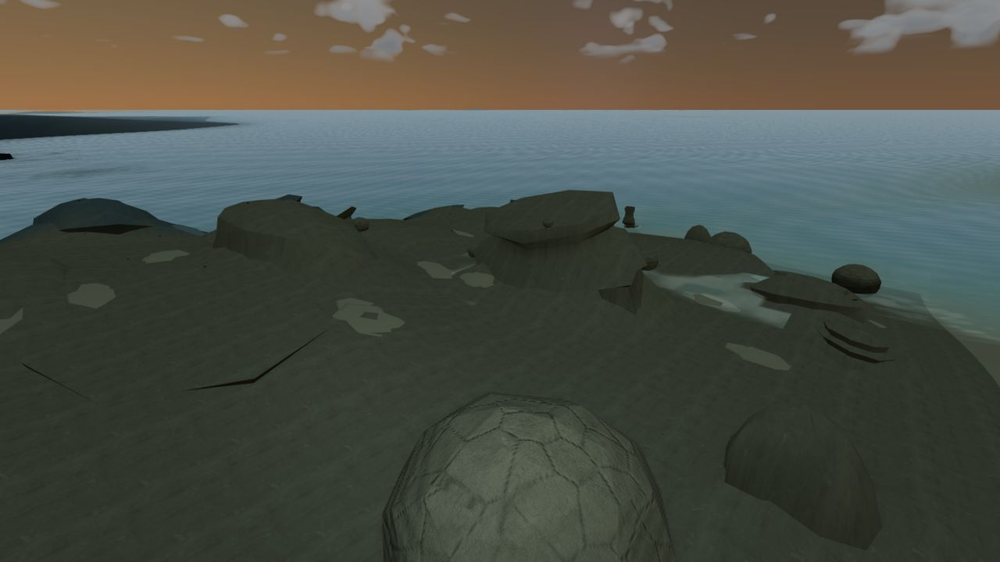
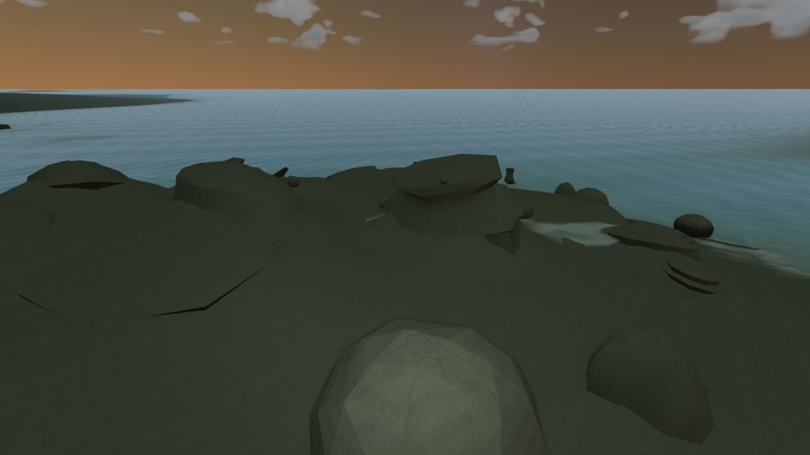
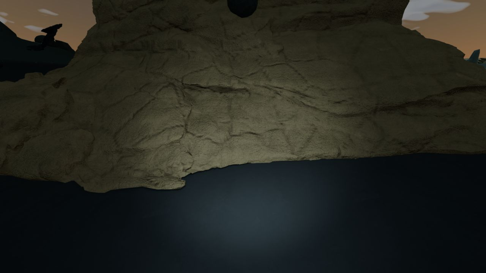
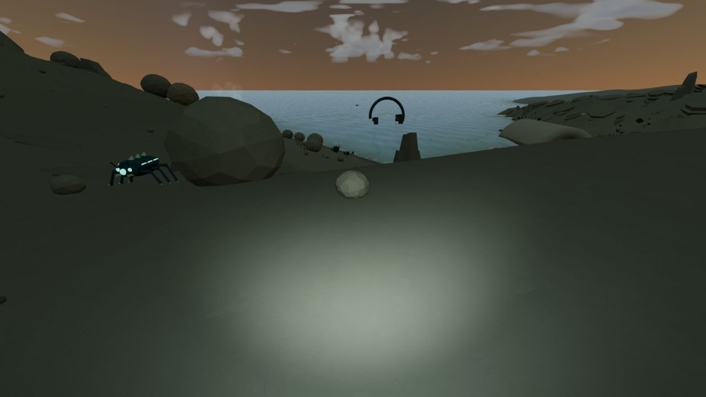

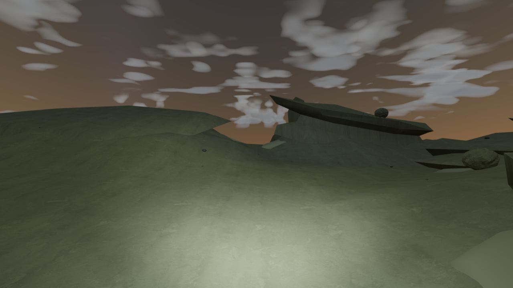
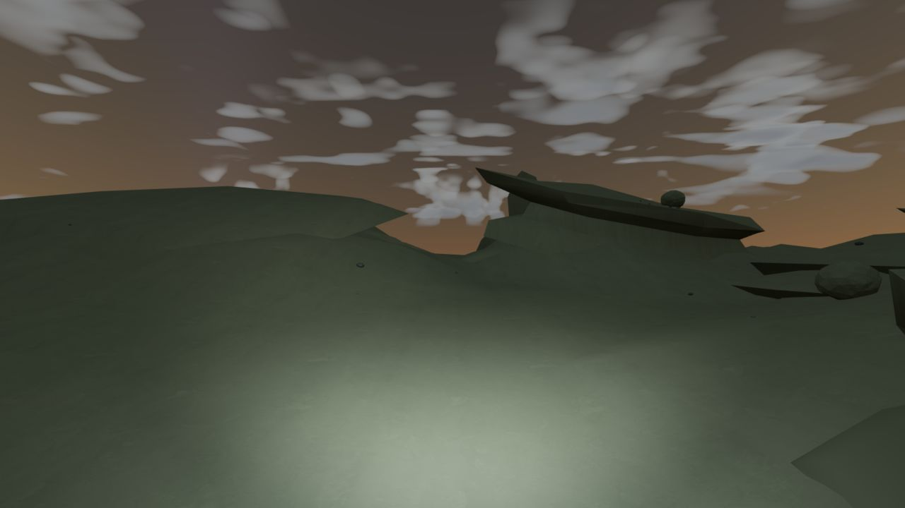
Same low sky direction and celestial model. Clear / thin / thick at t212. At t200 the moon sits above the lower bank; at t212 it moves partly into it.
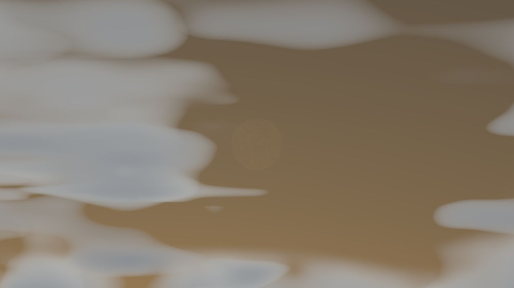
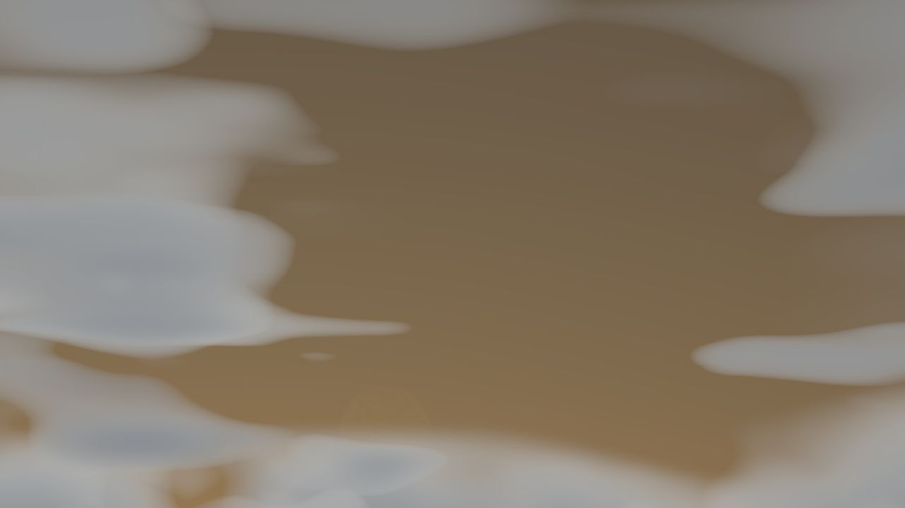
The original C06 pale land patches remain with both water meshes disabled, so those particular patches were material colors. The user’s exact floating-water screenshot was not available. Both candidate meshes were isolated during inundation without a detached sheet at this fixture.
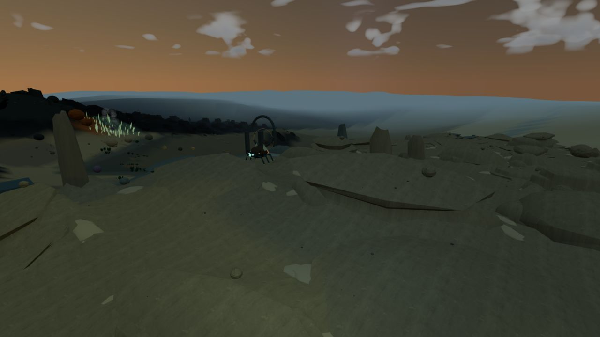
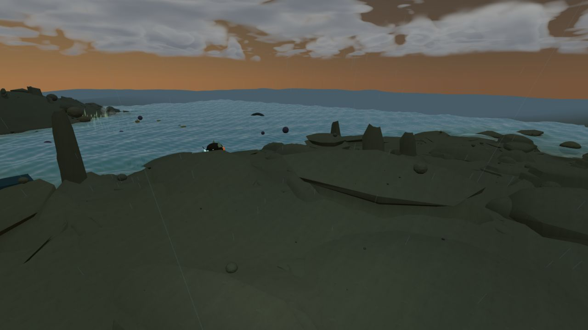
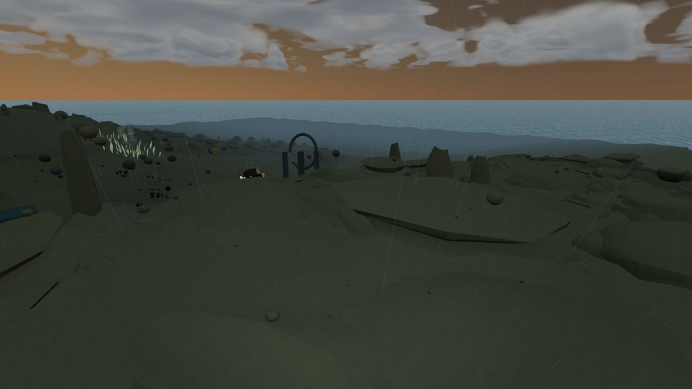
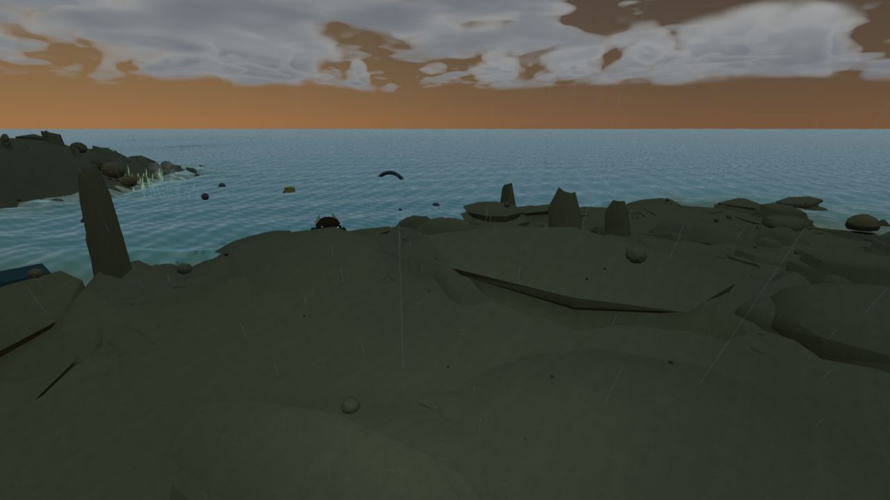
Eight stationary before frames are identical; eight stationary after frames are identical. No stationary flicker reproduced. Slow sweep below covers approximately 14 seconds; it is a sequence of stills, not a high-frame-rate flicker recording.

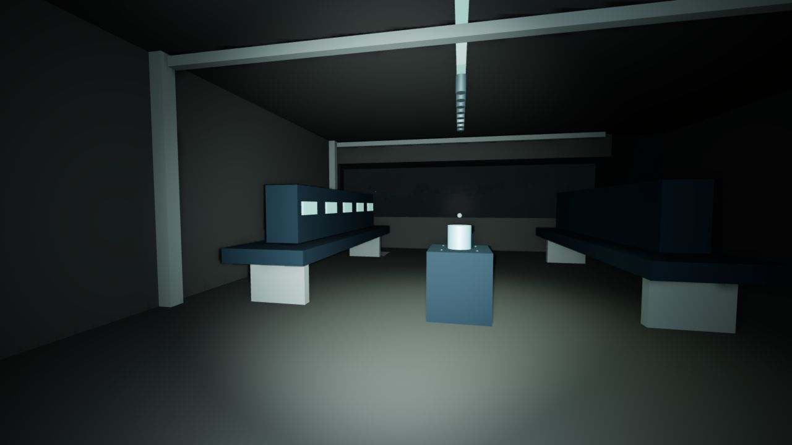
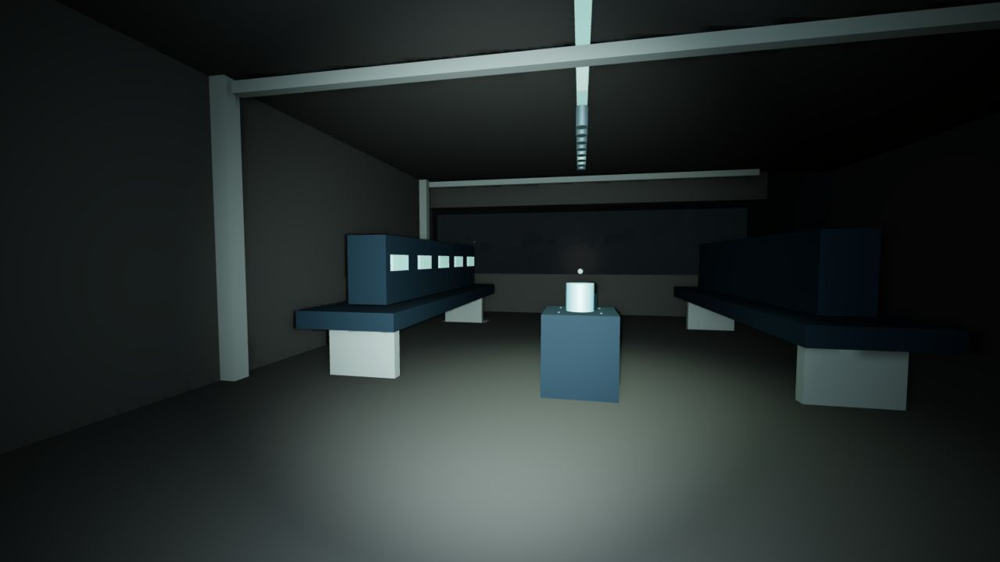
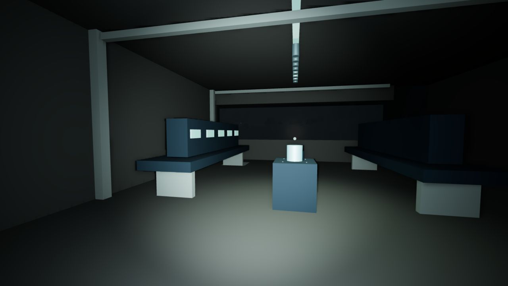